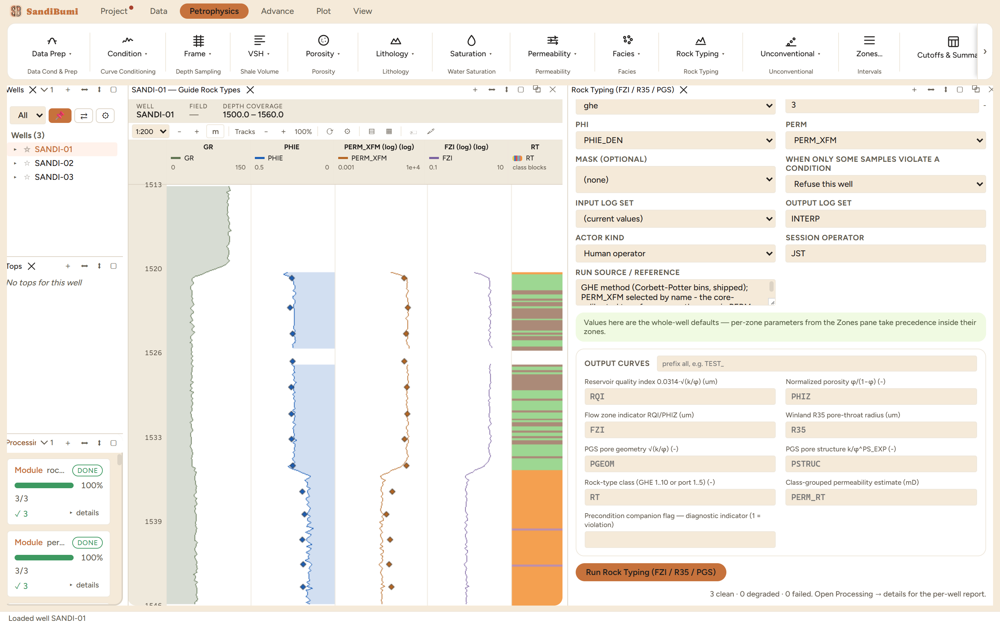

Per-sample rock-typing indicators from porosity and permeability: the hydraulic-unit family (RQI, PHIZ, FZI), the Winland R35 pore-throat radius, the Permadi-Susilo PGS pair, and a class curve RT_CLASS cut from whichever indicator the METHOD chooses. Rock typing is where a porosity-permeability cloud becomes a small set of classes that carry their own laws, and this module writes both the indicators and the classes so the choice of binning stays visible.
RQI = 0.0314 · √(k/φ) [µm] PHIZ = φ / (1 − φ) FZI = RQI / PHIZ (Amaefule 1993) R35 = 10^(0.732 + 0.588·log10 k − 0.864·log10 φ%) (Kolodzie 1980) PGEOM = √(k/φ) PSTRUC = k/φ^PS_EXP (Permadi-Susilo)
METHOD ghe bins FZI into the fixed Corbett-Potter 2004 global hydraulic elements, a ×2 series, so a GHE class number means the same rock in any field; METHOD winland_port bins R35 into the port classes (nano to mega). PERM_RT is the class-grouped permeability estimate, rebuilt from each class's geometric-mean FZI over the well: the number that shows what the classification alone can reproduce. Samples with φ outside (0,1) or k ≤ 0 stay MISSING.
3 clean. Run live: the GHE census lands the section in four classes: GHE 4 (31 samples), GHE 5 (269), GHE 6 (153), GHE 7 (120), with FZI running 0.77 / 0.91 / 3.10 at P10/P50/P90. The middle of the ×2 series is where a productive clastic section should sit, and the four-class spread is the cloud's real width, not noise.
SELECT value::INT rt, COUNT(*) FROM computed_curves WHERE curve_name = 'RT_CLASS' AND NOT isnan(value) GROUP BY 1 ORDER BY 1
The round-trip check: PERM_RT against the input PERM_XFM over all 573 samples reads a geometric ratio of 1.00 with a spread of 1.2. The class-mean reconstruction is unbiased and tight, which says the GHE binning is fine enough to carry this cloud's permeability: the honest test of whether a classification is worth attaching laws to.
The variant: METHOD winland_port on the same inputs redistributes the section into port classes 2 through 5 (9 / 289 / 247 / 28). Both censuses describe the same rock; the classes differ because the indicators encode pore geometry differently. Switching back to GHE reproduces the 31/269/153/120 census exactly.
